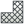

Die Einstellungen für Technisches Zeichnen (TechDraw) befinden sich im Dialogfenster Programmeinstellungen (Menü Bearbeiten → Einstellungen).
Je nach Plattform oder Formatierungsschema können die Dialogfenster etwas anders aussehen.
TechDraw 1

Allgemeines
- Projektionswinkel –
 Neue Projektionsgruppe (Mehrseitenansicht) verwendet entweder die erste (europäische Darstellung) oder die dritte (amerikanische Darstellung) Projektionsmethode (siehe auch Normalprojektion [1])
Neue Projektionsgruppe (Mehrseitenansicht) verwendet entweder die erste (europäische Darstellung) oder die dritte (amerikanische Darstellung) Projektionsmethode (siehe auch Normalprojektion [1]) - Versteckte Linien – der Stil Vollkörper, Bindestrich, Punkt, Strich-Punkt und Strich-Punkt-Punkt werden für versteckte Linien verwendet.
- Flächen erkennen – wenn diese Option aktiviert ist, versucht TechDraw Liniensegmente von Flächen zu erstellen, die vom Algorithmus als "versteckte Linien" erkannt wurden. Die Flächen werden benötigt, um  Schraffur anzuwenden. Bei komplexen 3D-Modellen kann es jedoch zu Leistungseinbußen kommen.
- Schnittkanten zeigen – dazu den Rand der
 Neue Schnittansicht markieren. Normalerweise nur zum Debuggen.
Neue Schnittansicht markieren. Normalerweise nur zum Debuggen. - Seiten aktuell zu halten – wenn die Zeichnungsseiten in Echtzeit mit dem 3D-Modell synchronisiert werden, können sich die Reaktionszeiten verlangsamen. Bei komplexen 3D-Modellen kann es hilfreich sein, wenn das Kontrollkästchens deaktiviert wird. Um eine einzelne Seite zu aktualisieren, kann die Eigenschaft »KeepUpdated« im Eigenschaftsfenster »Page« verwendet werden.
- Feldgröße im Zeichnungsrahmen – Steuert die Größe des kleinen grünen Punkts, der für die Auswahl von bearbeitbarem Text in einer Vorlage verwendet wird.
{kind=link}
Farben
Hier können die bevorzugten Farben für verschiedene Darstellungen eingestellt werden.
Kennzeichnungen
- Label Font – Name des Schriftfonts für die Beschriftung der Ansicht.
- Label Size – Schriftgröße (mm) für den Beschriftungstext der Ansicht.
- Template dot size - grüne Einheitspunktgröße in Einheiten
Dateien
- Standardvorlage – Dateiauswahl, um eine Standardvorlage für die eigenen Zeichnungen zu verwenden.
- Vorlagen Verzeichnis – Vorlagen-Verzeichnis für
 Neue Vorlagenauswahl.
Neue Vorlagenauswahl. - Schraffur-Bild – Standard SVG oder Bitmap Datei für
 Schraffur.
Schraffur. - PAT-Datei – Standard PAT Schraffurmuster-Datei für Schraffur.
- Name des Musters – Name des bevorzugten PAT Schraffurmuster.
TechDraw 2

Bemaßungen
- Maßeinheiten anzeigen – Fügt die Einheiten (mm, in usw.) hinter der Bemaßung an.
- Globale Nachkommastellen_Einstellungen verwenden – verwendet die Dezimalstellen aus Einstellungen > Allgemein > Einheiten.
- Dezimalstellen ändern – wenn »Globale Nachkommastellen-Einstellungen verwenden« deaktiviert ist, werden diese Angaben übernommen.
- Schriftgröße – Schriftgröße des Bemaßungstextes.
- Farbe – Standardfarbe für Bemaßungstext und -linie..
- Durchmesser-Symbol – das Durchmesser-Symbol wird dem Bemaßungstext vorangestellt.
- Pfeildarstellung – Darstellung der Maßlinienenden auswählen.
- Pfeilgröße – Größe der Darstellung an den Maßlinienenden in mm.
Dekoration
- Liniengruppe – Name der Liniengruppen, siehe Liniengruppen.
- Mattierungsstil – Zeigt
 Neue Detailansicht in einem Kreis oder Rechteck.
Neue Detailansicht in einem Kreis oder Rechteck. - Linienstil Mittellinie – Linienstil für die Mittellinien (horizontal und vertikal).
- Farbe der Mittellinie – Farbe für die Mittellinien.
- Linienstil für Schnitte – Linienstil für Schnitte in der Standardansicht von Neue Schnittansicht.
- Farbe der Schnittlinie – Farbe der Schnittlinien.
- Schraffurgröße – Liniendicke für
 Geometrische Schraffur. Siehe auch Schraffur.
Geometrische Schraffur. Siehe auch Schraffur.
Zurück zu Technisches Zeichnen (TechDraw) .